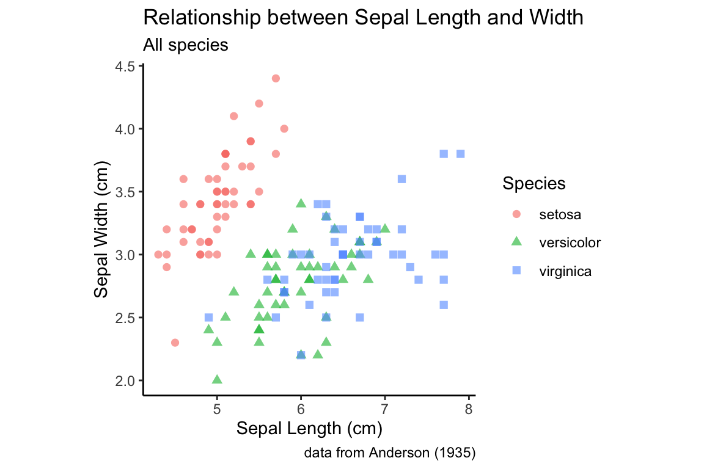

Chapter 6 Introduction to the dplyr package
In today’s class we introduce a new package, dplyr, which, along with ggplot2 will be used in almost every class session. We will also explore in a little more depth the readr package, for reading tabular data.
6.1 Libraries
Both readr and dplyr are members of the tidyverse, so a single invocation of library() makes the functions defined in these two packages available for our use:
library(tidyverse) 6.2 Reading data with the readr package
The readr package defines a number of functions for reading data tables from common file formats like Comma-Separated-Value (CSV) and Tab-Separated-Value (TSV) files.
The two most frequently used readr functions we’ll use in this class are read_csv() and read_tsv() for reading CSV and TSV files respectively. There are some variants of these basic function, which you can read about by invoking the help system (?read_csv).
6.2.1 Example data: NC Births
For today’s hands on session we’ll use a data set that contains information on 150 cases of mothers and their newborns in North Carolina in 2004. This data set is available at the following URL:
The births data is a TSV file, so we’ll use the read_tsv() function to read it:
births <- read_tsv("https://github.com/Bio723-class/example-datasets/raw/master/nc-births.txt")Parsed with column specification:
cols(
fAge = col_integer(),
mAge = col_integer(),
weeks = col_integer(),
premature = col_character(),
visits = col_integer(),
gained = col_integer(),
weight = col_double(),
sexBaby = col_character(),
smoke = col_character()
)Notice that when you used read_tsv() the function printed information about how it “parsed” the data (i.e. the types it assigned to each of the columns).
The variables in the data set are:
- father’s age (
fAge), - mother’s age (
mAge),
- weeks of gestation (
weeks) - whether the birth was premature or full term (
premature) - number of OB/GYN visits (
visits) - mother’s weight gained in pounds (
gained) - babies birth weight (
weight) - sex of the baby (
sexBaby) - whether the mother was a smoker (
smoke).
Notice too that we read the TSV file directly from a remote location via a URL. If instead, you wanted to load a local file on your computer you would specify the “path” – i.e. the location on your hard drive where you stored the file. For example, here is how I would load the same file if it was stored in the Downloads directory on my Mac laptop:
# load the data from a local file
births <- read_tsv("/Users/pmagwene/Downloads/nc-births.txt")6.2.2 Reading Excel files
The tidyverse also includes a package called readxl which can be used to read Excel spreadsheets (recent versions with .xls and .xlsx extensions). Excel files are somewhat more complicated to deal with because they can include separate “sheets”. We won’t use readxl in this class, but documentation and examples of how readxl is used can be found at the page linked above.
6.3 A note on “tibbles”
You may have noticed that most of the functions defined in tidyverse related packages return not data frames, but rather something called a “tibble”. You can think about tibbles as light-weight data frames. In fact if you ask about the “class” of a tibble you’ll see that it includes data.frame as one of it’s classes as well as tbl and tbl_df.
class(births)There are some minor differences between data frame and tibbles. For example, tibbles print differently in the console and don’t automatically change variable names and types in the same way that standard data frames do. Usually tibbles can be used wherever a standard data frame is expected, but you may occasionally find a function that only works with a standard data frame. It’s easy to convert a tibble to a standard data frame using the as.data.frame function:
births.std.df <- as.data.frame(births)For more details about tibbles, see the Tibbles chapter in R for Data Analysis.
6.4 Data filtering and transformation with dplyr
dplyr is powerful tool for data filter and transformation. In the same way that ggplot2 attempts to provide a “grammar of graphics”, dplyr aims to provide a “grammar of data manipulation”. In today’s material we will see how dplyr complements and simplifies standard data frame indexing and subsetting operations. However, dplyr is focused only on data frames and doesn’t completely replace the basic subsetting operations, and so being adept with both dplyr and the indexing approaches we’ve seen previously is important. If you’re curious about the name “dplyr”, the package’s originator Hadley Wickham says it’s supposed to invoke the idea of pliers for data frames (Github: Meaning of dplyrs name)
6.5 dplyr’s “verbs”
The primary functions in the dplyr package can be thought of as a set of “verbs”, each verb corresponding to a common data manipulation task. Some of the most frequently used verbs/functions in dplyr include:
select– select columnsfilter– filter rowsmutate– create new columnsarrange– reorder rowssummarize– summarize valuesgroup_by– split data frame on some grouping variable. Can be powerfully combined withsummarize
All of these functions return new data frames rather than modifying the existing data frame (though some of the functions support in place modification of data frames via optional arguments).We illustrate these below by example using the NC births data.
6.5.1 select
The select function subsets the columns (variables) of a data frame. For example, to select just the weeks and weight columns from the births data set we could do:
wks.weight <- select(births, weeks, weight)
dim(wks.weight) # dim should be 50 x 2
head(wks.weight)The equivalent using standard indexing would be:
wks.wt.alt <- births[c("weeks", "weight")]
dim(wks.wt.alt)
head(wks.wt.alt)Notes:
* The first argument to all of the dplyr functions is the data frame you’re operating on
- When using functions defined in
dplyrandggplot2variable names are (usually) not quoted or used with the$operator. This is a design feature of these libraries and makes it easier to carry out interactive analyes because it saves a fair amount of typing.
6.5.2 filter
The filter function returns those rows of the data set that meet the given logical criterion.
For example, to get all the premature babies in the data set we could use filter as so:
premies <- filter(births, premature == "premie")
dim(premies)The equivalent using standard indexing would be:
premies.alt <- births[births$premature == "premie",] The filter function will work with more than one logical argument, and these are joined together using Boolean AND logic (i.e. intersection). For example, to find those babies that were premature and whose mothers were smokers we could do:
smoking.premies <- filter(births, premature == "premie", smoke == "smoker")The equivalent call using standard indexing is:
# don't forget the trailing comma to indicate rows!
smoking.premies.alt <- births[(births$premature == "premie") & (births$smoke == "smoker"),]filter also accepts logical statements chained together using the standard Boolean operators. For example, to find babies who were premature or whose moms were older than 35 you could use the OR operator |:
premies.or.oldmom <- filter(births, premature == "premie" | fAge > 35)6.5.3 mutate
The mutate function creates a new data frame that is the same as input data frame but with additional variables (columns) as specified by the function arguments. In the example below, I create two new variables, weight.in.kg and a mom.smoked:
# to make code more readable it's sometime useful to spread out
# function arguments over multiple lines like I've done here
births.plus <- mutate(births,
weight.in.kg = weight / 2.2,
mom.smoked = (smoke == "smoker"))
head(births.plus)The equivalent using standard indexing would be to create a new data frame from births, appending the new variables to the end as so:
births.plus.alt <- data.frame(births,
weight.in.kg = births$weight / 2.2,
mom.smoked = (births$smoke == "smoker"))6.5.4 arrange
Arrange creates a new data frame where the rows are sorted according to their values for one or more variables. For example, to sort by mothers age we could do:
young.moms.first <- arrange(births, mAge)
head(young.moms.first)The equivalent to arrange using standard indexing would be to use the information returned by the order function:
young.moms.first.alt <- births[order(births$mAge),]
head(young.moms.first.alt)When using arrange, multiple sorting variables can be specified:
sorted.by.moms.and.dads <- arrange(births, mAge, fAge)
head(sorted.by.moms.and.dads)If you want to sort in descending order, you can combing arrange with the desc (=descend) function, also defined in dplyr:
old.moms.first <- arrange(births, desc(mAge))
head(old.moms.first)6.5.5 summarize
summarize applies a function of interest to one or more variables in a data frame, reducing a vector of values to a single value and returning the results in a data frame. This is most often used to calculate statistics like means, medians, count, etc. As we’ll see below, this is powerful when combined with the group_by function.
summarize(births,
mean.wt = mean(weight),
median.wks = median(weeks))You’ll need to be diligent if your data has missing values (NAs). For example, by default the mean function returns NA if any of the input values are NA:
summarize(births,
mean.gained = mean(gained))However, if you read the mean docs (?mean) you’ll see that there is an na.rm argument that indicates whether NA values should be removed before computing the mean. This is what we want so we instead call summarize as follows:
summarize(births,
mean.gained = mean(gained, na.rm = TRUE))6.5.6 group_by
The group_by function implicitly adds grouping information to a data frame.
# group the births by whether mom smoked or not
by_smoking <- group_by(births, smoke)The object returned by group_by is a “grouped data frame”:
class(by_smoking)Some functions, like count() and summarize() (see below) know how to use the grouping information. For example, to count the number of births conditional on mother smoking status we could do:
count(by_smoking)group_by also works with multiple grouping variables, with each added grouping variable specified as an additional argument:
by_smoking.and.mAge <- group_by(births, smoke, mAge > 35)6.5.7 Combining grouping and summarizing
Grouped data frames can be combined with the summarize function we saw above. For example, if we wanted to calculate mean birth weight, broken down by whether the baby’s mother smoked or not we could call summarize with our by_smoking grouped data frame:
summarize(by_smoking, mean.wt = mean(weight))Similarly to get the mean birth weight of children conditioned on mothers smoking status and age:
summarize(by_smoking.and.mAge, mean(weight))6.5.8 Scoped variants of mutate and summarize
Both the mutate() and summarize() functions provide “scoped” alternatives, that allow us to apply the operation on a selection of variables. These variants are often used in combination with grouping. We’ll look at the summarize versions – summarize_all(), summarize_at(), and summarize_if(). See the documentation (?mutate_all) for descriptions of the mutate versions.
6.5.8.1 summarize_all()
summarize_all() applies a one or more functions to all columns in a data frame. Here we illustrate a simple version of this with the iris data:
# group by species
by_species <- group_by(iris, Species)
# calculate the mean of every variable, grouped by species
summarize_all(by_species, mean) Note that if we try and apply summarize_all() in the same way to the grouped data frame by_smoking we’ll get a bunch of warning messages:
summarize_all(by_smoking, mean)Here’s an example of one of these warnings:
Warning messages:
1: In mean.default(premature) :
argument is not numeric or logical: returning NAThis message is telling us that we can’t apply the mean() function to the data frame column premature because this is not a numerical or logical vector. Despite this and the other similar warnings, summarize_all() does return a result, but the means for any non-numeric values are replaced with NAs, as shown below:
# A tibble: 2 x 9
smoke fAge mAge weeks premature visits gained weight sexBaby
<chr> <dbl> <dbl> <dbl> <dbl> <dbl> <dbl> <dbl> <dbl>
1 nonsmoker NA 26.9 38.6 NA NA NA 7.18 NA
2 smoker NA 26.0 38.5 NA 10.8 NA 6.78 NAIf you examine the output above, you’ll see that there are several variables that are numeric, however we still got NAs when we calculated the grouped means. This is because those variables contain NA values. The mean function has an optional argument, na.rm, which tells the function to remove any missing data before calculating the mean. Thus we can modify our call to summarize_all as follows:
# calculate mean of all variables, grouped by smoking status
summarize_all(by_smoking, mean, na.rm = TRUE)Note that the non-numeric data columns still lead to NA values.
6.5.8.2 summarize_if()
summarize_if() is similar to summarize_all(), except it only applies the function of interest to those variables that match a particular predicate (i.e. are TRUE for a particular TRUE/FALSE test).
Here we use summarize_if() to apply the mean() function to only those variables (columns) that are numeric.
# calculate mean of all numeric variables, grouped by smoking status
summarize_if(by_smoking, is.numeric, mean, na.rm = TRUE)6.5.8.3 summarize_at()
summarize_at() allows us to apply functions of interest only to specific variables.
# calculate mean of gained and weight variables, grouped by smoking status
summarize_at(by_smoking, c("gained", "weight"), mean, na.rm = TRUE)All three of the scoped summarize functions can also be used to apply multiple functions, by wrapping the function names in a call to dplyr::funs():
# calculate mean and std deviation of
# gained and weight variables, grouped by smoking status
summarize_at(by_smoking, c("gained", "weight"), funs(mean, sd), na.rm = TRUE)summarize_at() accepts as the the argument for variables a character vector of column names, a numeric vector of column positions, or a list of columns generated by the dplyr::vars() function, which can be be used as so:
# reformatted to promote readability of arguments
summarize_at(by_smoking,
vars(gained, weight),
funs(mean, sd),
na.rm = TRUE)6.5.9 Combining summarize with grouping aesthetics in ggplot2
We’ve already seen an instance of grouping (conditioning) when we used aesthetics like color or fill to distinguish subgroups in different types of statistical graphics. Below is an example where we integrate information from a group_by/summarize operation into a plot:
# calculate mean weights, conditioned on smoking status
wt.by.smoking <-
summarize(by_smoking, mean_weight = mean(weight, na.rm = TRUE))
# create density plot for all the data
# and then use geom_vline to draw vertical lines at the means for
# each group
ggplot(births) +
geom_density(aes(x = weight, color = smoke)) + # data drawn from births
geom_vline(data = wt.by.smoking, # note use of different data frame!
mapping = aes(xintercept = mean_weight, color = smoke),
linetype = 'dashed')6.6 Pipes
dplyr includes a very useful operator available called a pipe available to us. Pipes are powerful because they allow us to chain together sets of operations in a very intuitive fashion while minimizing nested function calls. We can think of pipes as taking the output of one function and feeding it as the first argument to another function call, where we’ve already specified the subsequent arguments.
Pipes are actually defined in another packaged called magrittr. We’ll look at the basic pipe operator and then look at a few additional “special” pipes that magrittr provides.
6.6.1 Install and load magrittr
In magrittr in not already installed, install it via the command line or the RStudio GUI. Having done so, you will need to load magrittr via the library() function:
library(magrittr)6.6.2 The basic pipe operator
The pipe operator is designated by %>%. Using pipes, the expression x %>% f() is equivalent to f(x) and the expression x %>% f(y) is equivalent to f(x,y). The documentation on pipes (see ?magrittr) uses the notation lhs %>% rhs where lhs and rhs are short for “left-hand side” and “right-hand side” respectively. I’ll use this same notation in some of the explanations that follow.
births %>% head() # same as head(births)
births %>% head # you can even leave the parentheses out
births %>% head(10) # same as head(births, 10)Multiple pipes can be chained together, such that x %>% f() %>% g() %>% h() is equivalent to h(g(f(x))).
# equivalent to: head(arrange(births, weight), 10)
births %>% arrange(weight) %>% head(10) When there are multiple piping operations, I like to arrange the statements vertically to help emphasize the flow of processing and to facilitate debugging and/or modification. I would usually rearrange the above code block as follows:
births %>%
arrange(weight) %>%
head(10)6.6.3 An example without pipes
To illustrate how pipes help us, first let’s look at an example set of analysis steps without using pipes. Let’s say we wanted to explore the relationship between father’s age and baby’s birth weight. We’ll start this process of exploration by generating a bivariate scatter plot. Being good scientists we want to express our data in SI units, so we’ll need to converts pounds to kilograms. You’ll also recall that a number of the cases have missing data on father’s age, so we’ll want to remove those before we plot them. Here’s how we might accomplish these steps:
# add a new column for weight in kg
births.kg <- mutate(births, weight.kg = weight / 2.2)
# filter out the NA fathers
filtered.births <- filter(births.kg, !is.na(fAge))
# create our plot
ggplot(filtered.births, aes(x = fAge, y = weight.kg)) +
geom_point() +
labs(x = "Father's Age (years)", y = "Birth Weight (kg)")
Notice that we created two “temporary” data frames along the way – births.kg and filtered.births. These probably aren’t of particular interest to us, but we needed to generate them to build the plot we wanted. If you were particularly masochistic you could avoid these temporary data frames by using nested functions call like this:
# You SHOULD NOT write nested code like this.
# Code like this is hard to debug and understand!
ggplot(filter(mutate(births, weight.kg = weight / 2.2), !is.na(fAge)),
aes(x = fAge, y = weight.kg)) +
geom_point() +
labs(x = "Father's Age (years)", y = "Birth Weight (kg)")6.6.4 The same example using pipes
The pipe operator makes the output of one statement (lhs) as the first input of a following function (rhs). This simplifies the above example to:
births %>%
mutate(weight.kg = weight / 2.2) %>%
filter(!is.na(fAge)) %>%
ggplot(aes(x = fAge, y = weight.kg)) +
geom_point() +
labs(x = "Father's Age (years)", y = "Birth Weight (kg)")In the example above, we feed the data frame into the mutate function. mutate expects a data frame as a first argument, and subsequent arguments specify the new variables to be created. births %>% mutate(weight.kg = weight / 2.2) is thus equivalent to mutate(births, weight.kg = weight / 2.2)). We then pipe the output to filter, removing NA fathers, and then pipe that output as the input to ggplot.
As mentioned previously, it’s good coding style to write each discrete step as its own line when using piping. This make it easier to understand what the steps of the analysis are as well as facilitating changes to the code (commenting out lines, adding lines, etc)
6.6.5 Assigning the output of a statement involving pipes to a variable
It’s important to recognize that pipes are simply a convenient way to chain together a series of expression. Just like any other compound expression, the output of a series of pipe statements can be assigned to a variable, like so:
stats.old.moms <-
births %>%
filter(mAge > 35) %>%
summarize(median.gestation = median(weeks),
mean.weight = mean(weight))
stats.old.momsNote that our summary table, stats.old.moms, is itself a data frame.
6.6.6 Compound assignment pipe operator
A fairly common operation when working interactively in R is to update an existing data frame. magrittr defines another pipe operator – %<>% – called the “compound assignment” pipe operator, to facilitate this. The compound assignment pipe operator has the basic usage lhs %<>% rhs. This operator evaluates the function on the rhs using the lhs as the first argument, and then updates the lhs with the resulting value. This is simply shorthand for writing lhs <- lhs %>% rhs.
stats.old.moms %<>% # note compound pipe operator!
mutate(mean.weight.kg = mean.weight / 2.2)6.6.7 The dot operator with pipes
When working with pipes, sometimes you’ll want to use the lhs in multiple places on the rhs, or as something other than the first argument to the rhs. magrittr provides for this situation by using the dot (.) operator as a placeholder. Using the dot operator, the expression y %>% f(x, .) is equivalent to f(x,y).
c("dog", "cakes", "sauce", "house") %>% # create a vector
sample(1) %>% # pick a random single element of that vector
str_c("hot", .) # string concatenate the pick with the word "hot"6.6.8 The exposition pipe operator
magrittr defines another operator called the “exposition pipe operator”, designed %$%. This operator exposes the names in the lhs to the expression on the rhs.
Here is an example of using the exposition pipe operator to simply return the vector of weights:
births %>%
filter(premature == "premie") %$% # note the different pipe operator!
weightIf we wanted to calculate the minimum and maximum weight of premature babies in the data set we could do the following (though I’d usually prefer summarize() unless I needed the results in the form of a vector):
births %>%
filter(mAge > 35) %$% # note the different pipe operator!
c(min(weight), max(weight))